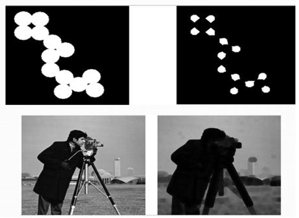
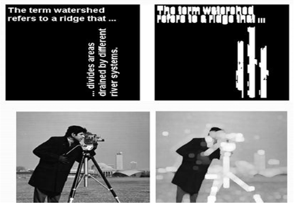

Introduction
Image segmentation is the division of an image into regions or categories, which correspond to different objects or parts of objects.
Every pixel in an image is allocated to one of a number of these categories.
A good segmentation is typically one in which:
- pixels in the same category have similar grey scale of multivariate values and form a connected region,
- neighboring pixels which are in different categories have dissimilar values.
Edge Based Image Segmentation
Edge-based segmentation is one of the most popular implementations of segmentation in image processing.
It focuses on identifying the edges of different objects in an image.
This is a crucial step as it helps you find the features of the various objects present in the image as edges contain a lot of information you can use.
Edge detection is widely popular because it helps you in removing unwanted and unnecessary information from the image.
It reduces the image’s size considerably, making it easier to analyse the same.
Algorithms used in edge-based segmentation identify edges in an image according to the differences in texture, contrast, grey level, colour, saturation, and other properties.
You can improve the quality of your results by connecting all the edges into edge chains that match the image borders more accurately.
Gradient
In image processing, a gradient refers to the rate of change of intensity in an image.
Mathematically, the gradient is a vector field that points in the direction of the greatest rate of increase of intensity and whose magnitude represents the rate of change in that direction.
For edge detection, we are primarily interested in regions of an image where there is a large change in pixel intensity—typically indicating the presence of an edge.
In image processing, a gradient refers to the directional change in the intensity or color
in an image. Mathematically, the gradient of an image function f(x, y) is a vector that
points in the direction of the greatest rate of increase off, and whose magnitude is the
rate of change in that direction:
Where:
- ∂f/∂x: the partial derivative in the horizontal direction (gradient in x-direction)
- ∂f/∂y: the partial derivative in the vertical direction (gradient in y-direction)
The magnitude of the gradient is given by:
And the direction (angle) of the gradient is:
Steps in Edge Detection
Algorithms for edge detection contain three steps:
- Filtering: Since gradient computation based on intensity values of only two points are susceptible to noise and other vagaries in discrete computations, filtering is commonly used to improve the performance of an edge detector with respect to noise. However, there is a trade-off between edge strength and noise reduction. More filtering to reduce noise results in a loss of edge strength.
- Enhancement: In order to facilitate the detection of edges, it is essential to determine changes in intensity in the neighborhood of a point. Enhancement emphasizes pixels where there is a significant change in local intensity values and is usually performed by computing the gradient magnitude.
- Detection: We only want points with strong edge content. However, many
points in an image have a nonzero value for the gradient, and not all
of these points are edges for a particular application. Therefore, some
method should be used to determine which points are edge points.
Frequently, thresholding provides the criterion used for detection.
Examples at the end of this section will clearly illustrate each of these steps
using various edge detectors.
Many edge detection algorithms include a fourth step: - Localization: The location of the edge can be estimated with subpixel resolution if required for the application. The edge orientation can also be estimated.
Edge Detectors
- First-order derivative
- Robert
- Sobel
- Perwitt
- Second-order derivative
- Laplacian
- Canny
- Morphological operations

-
Morphological Operations
Morphological transformations are some simple operations based on the image shape. It is normally performed on binary images. It needs two inputs, one is our original image, second one is called structuring element or kernel which decides the nature of operation. Two basic morphological operators are Erosion and Dilation. Then its variant forms like Opening, Closing, Gradient etc also comes into play.
-
Erosion
Erosion is a fundamental morphological operation that functions similarly to the natural process of soil erosion — it gradually erodes the boundaries of the foreground object. Typically, the foreground is represented in white (pixel value = 1), and the background in black (pixel value = 0).
During erosion, a structuring element (or kernel) is slid over the image, much like in 2D convolution. For a pixel in the output image to be set to 1, all pixels under the kernel in the original image must also be 1. If even one pixel under the kernel is 0, the output pixel is set to 0.
As a result, pixels at the boundaries of white regions are removed, causing the white (foreground) areas to shrink. The extent of erosion depends on the size and shape of the structuring element.

Fig. 4 Example of Erosion - Removes small white noise
- Separates objects that are connected
- Reduces thickness of foreground objects
-
Dilation
Dilation is the morphological operation that performs the inverse of erosion. While erosion reduces the boundaries of foreground objects, dilation expands them.
In dilation, a structuring element (kernel) slides over the binary image. For each position of the kernel, the corresponding pixel in the output image is set to 1 (white) if at least one pixel under the kernel in the input image is 1. In other words, if any part of the kernel overlaps with a white pixel in the original image, the output pixel is set to white.
This process increases the size of the foreground objects (white regions), causing them to grow outward by a margin defined by the structuring element.

Fig. 5 Example of Dilation - Expands object boundaries, filling small holes and gaps
- Useful after erosion to restore object size (a sequence called opening)
- Bridges small breaks or connects disjoint parts of objects
- Fills in gaps in object contours or outlines
-
Opening
Opening is a fundamental morphological operation in image processing, defined as an erosion followed by dilation, using the same structuring element for both steps. It is primarily used to remove small objects or noise from an image while preserving the shape and size of larger foreground objects.
Effects of Opening:- Removing salt-and-pepper noise from binary images.
- Eliminating small unwanted objects (e.g., speckles, dots).
- Separating weakly connected components.
- Cleaning up scanned documents, microscopy images, etc.
- Preprocessing step for shape analysis and feature extraction.
-
Closing
Closing is a fundamental morphological operation that is essentially the reverse of Opening. It is performed by applying Dilation followed by Erosion on a binary image. While Opening focuses on removing small objects and shrinking the foreground, Closing works to fill small holes or gaps in the foreground objects, and it is particularly useful for removing small black points within or around the objects.
Effects of Closing:- Closing small holes or gaps inside the foreground objects, making them more solid and continuous.
- Eliminating small black noise points (often referred to as salt noise) that are scattered on or near the objects.
- Smoothening object contours by closing small imperfections while preserving the general shape of the objects.
- Joining broken parts of an object, making them appear as a single connected structure.
-
Erosion